Out[9]: 4.0
In [10]: 100.0 / 5.0 / 5.0
Out[10]: 4.0
In [11]: runfile('C:/Users/xeroj/Downloads/V/Computer Vision/Lab4_Clustering__Classification/lab4_problem1.py', wdir='C:/Users/xeroj/Downloads/V/Computer Vision/Lab4_Clustering__Classification')
K-Means took 1.378 s for k = 5
Replacing took 0.002 s
K-Means took 0.338 s for k = 10
Replacing took 0.002 s
K-Means took 0.595 s for k = 15
Replacing took 0.002 s
K-Means took 0.751 s for k = 20
Replacing took 0.002 s
K-Means took 0.991 s for k = 25
Replacing took 0.002 s
K-Means took 1.164 s for k = 30
Replacing took 0.002 s
K-Means took 1.347 s for k = 35
Replacing took 0.002 s
K-Means took 1.522 s for k = 40
Replacing took 0.002 s
K-Means took 1.680 s for k = 45
Replacing took 0.003 s
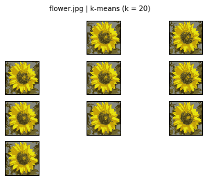
In [12]: range(k_min, k_max+k_step,k_step)
Out[12]: [5, 10, 15, 20, 25, 30, 35, 40, 45]
In [13]: runfile('C:/Users/xeroj/Downloads/V/Computer Vision/Lab4_Clustering__Classification/lab4_problem1.py', wdir='C:/Users/xeroj/Downloads/V/Computer Vision/Lab4_Clustering__Classification')
K-Means took 0.878 s for k = 5
Replacing took 0.001 s
K-Means took 0.434 s for k = 10
Replacing took 0.002 s
K-Means took 0.581 s for k = 15
Replacing took 0.002 s
K-Means took 0.741 s for k = 20
Replacing took 0.002 s
K-Means took 1.014 s for k = 25
Replacing took 0.002 s
K-Means took 1.163 s for k = 30
Replacing took 0.002 s
K-Means took 1.327 s for k = 35
Replacing took 0.002 s
K-Means took 1.499 s for k = 40
Replacing took 0.003 s
K-Means took 1.651 s for k = 45
Replacing took 0.003 s
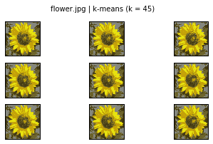
In [14]: runfile('C:/Users/xeroj/Downloads/V/Computer Vision/Lab4_Clustering__Classification/lab4_problem1.py', wdir='C:/Users/xeroj/Downloads/V/Computer Vision/Lab4_Clustering__Classification')
K-Means took 0.809 s for k = 5
Replacing took 0.001 s
K-Means took 2.411 s for k = 10
Replacing took 0.002 s
K-Means took 4.094 s for k = 15
Replacing took 0.002 s
K-Means took 6.098 s for k = 20
Replacing took 0.003 s
K-Means took 11.990 s for k = 25
Replacing took 0.003 s
K-Means took 11.337 s for k = 30
Replacing took 0.004 s
K-Means took 12.175 s for k = 35
Replacing took 0.005 s
K-Means took 16.565 s for k = 40
Replacing took 0.006 s
K-Means took 21.152 s for k = 45
Replacing took 0.005 s
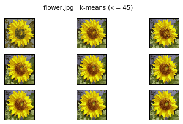
In [15]: runfile('C:/Users/xeroj/Downloads/V/Computer Vision/Lab4_Clustering__Classification/lab4_problem1.py', wdir='C:/Users/xeroj/Downloads/V/Computer Vision/Lab4_Clustering__Classification')
File "C:/Users/xeroj/Downloads/V/Computer Vision/Lab4_Clustering__Classification/lab4_problem1.py", line 33
k_str = str(k) + "," for k in range(k_min, k_max+k_step, k_step)
^
SyntaxError: invalid syntax
In [16]: runfile('C:/Users/xeroj/Downloads/V/Computer Vision/Lab4_Clustering__Classification/lab4_problem1.py', wdir='C:/Users/xeroj/Downloads/V/Computer Vision/Lab4_Clustering__Classification')
File "C:/Users/xeroj/Downloads/V/Computer Vision/Lab4_Clustering__Classification/lab4_problem1.py", line 35
nrows = ceil(k_max / k_step / IMAGE_COLUMNS)
^
SyntaxError: invalid syntax
In [17]: runfile('C:/Users/xeroj/Downloads/V/Computer Vision/Lab4_Clustering__Classification/lab4_problem1.py', wdir='C:/Users/xeroj/Downloads/V/Computer Vision/Lab4_Clustering__Classification')
File "C:/Users/xeroj/Downloads/V/Computer Vision/Lab4_Clustering__Classification/lab4_problem1.py", line 36
nrows = ceil(k_max / k_step / IMAGE_COLUMNS)
^
SyntaxError: invalid syntax
In [18]: runfile('C:/Users/xeroj/Downloads/V/Computer Vision/Lab4_Clustering__Classification/lab4_problem1.py', wdir='C:/Users/xeroj/Downloads/V/Computer Vision/Lab4_Clustering__Classification')
K-Means took 0.030 s for k = 1
Replacing took 0.001 s
K-Means took 0.148 s for k = 2
Replacing took 0.001 s
K-Means took 0.216 s for k = 3
Replacing took 0.002 s
K-Means took 1.013 s for k = 4
Replacing took 0.001 s
K-Means took 1.209 s for k = 5
Replacing took 0.001 s
K-Means took 1.181 s for k = 6
Replacing took 0.002 s
K-Means took 1.482 s for k = 7
Replacing took 0.001 s
K-Means took 1.888 s for k = 8
Replacing took 0.002 s
K-Means took 2.322 s for k = 9
Replacing took 0.002 s
K-Means took 1.939 s for k = 10
Replacing took 0.002 s
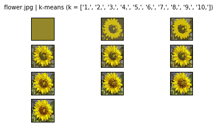
In [19]: runfile('C:/Users/xeroj/Downloads/V/Computer Vision/Lab4_Clustering__Classification/lab4_problem1.py', wdir='C:/Users/xeroj/Downloads/V/Computer Vision/Lab4_Clustering__Classification')
<matplotlib.figure.Figure at 0x106e5860>
Traceback (most recent call last):
File "<ipython-input-19-e223551df711>", line 1, in <module>
runfile('C:/Users/xeroj/Downloads/V/Computer Vision/Lab4_Clustering__Classification/lab4_problem1.py', wdir='C:/Users/xeroj/Downloads/V/Computer Vision/Lab4_Clustering__Classification')
File "C:\Users\xeroj\Desktop\Local Programming\Anaconda2\lib\site-packages\spyder\utils\site\sitecustomize.py", line 866, in runfile
execfile(filename, namespace)
File "C:\Users\xeroj\Desktop\Local Programming\Anaconda2\lib\site-packages\spyder\utils\site\sitecustomize.py", line 87, in execfile
exec(compile(scripttext, filename, 'exec'), glob, loc)
File "C:/Users/xeroj/Downloads/V/Computer Vision/Lab4_Clustering__Classification/lab4_problem1.py", line 34, in <module>
figure.suptitle(filename + " | k-means {"+k_min+"-"+k_max+"}")
TypeError: cannot concatenate 'str' and 'int' objects
In [20]: runfile('C:/Users/xeroj/Downloads/V/Computer Vision/Lab4_Clustering__Classification/lab4_problem1.py', wdir='C:/Users/xeroj/Downloads/V/Computer Vision/Lab4_Clustering__Classification')
Took 0.038 s
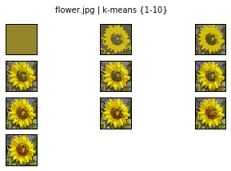
In [21]: runfile('C:/Users/xeroj/Downloads/V/Computer Vision/Lab4_Clustering__Classification/lab4_problem1.py', wdir='C:/Users/xeroj/Downloads/V/Computer Vision/Lab4_Clustering__Classification')
Took 0.040 s
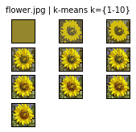
In [22]: runfile('C:/Users/xeroj/Downloads/V/Computer Vision/Lab4_Clustering__Classification/lab4_problem1.py', wdir='C:/Users/xeroj/Downloads/V/Computer Vision/Lab4_Clustering__Classification')
Took 0.041 s
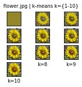
In [23]: runfile('C:/Users/xeroj/Downloads/V/Computer Vision/Lab4_Clustering__Classification/lab4_problem1.py', wdir='C:/Users/xeroj/Downloads/V/Computer Vision/Lab4_Clustering__Classification')
Took 0.043 s
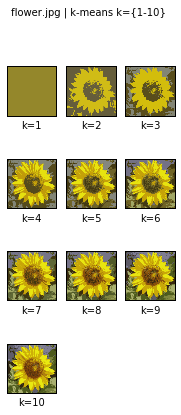
In [24]: runfile('C:/Users/xeroj/Downloads/V/Computer Vision/Lab4_Clustering__Classification/lab4_problem1.py', wdir='C:/Users/xeroj/Downloads/V/Computer Vision/Lab4_Clustering__Classification')
Took 0.039 s
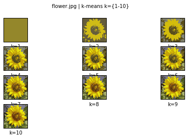
In [25]: runfile('C:/Users/xeroj/Downloads/V/Computer Vision/Lab4_Clustering__Classification/lab4_problem1.py', wdir='C:/Users/xeroj/Downloads/V/Computer Vision/Lab4_Clustering__Classification')
Took 0.111 s
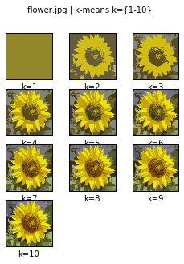
In [26]: runfile('C:/Users/xeroj/Downloads/V/Computer Vision/Lab4_Clustering__Classification/lab4_problem1.py', wdir='C:/Users/xeroj/Downloads/V/Computer Vision/Lab4_Clustering__Classification')
Took 0.037 s
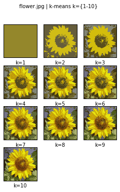
In [27]: runfile('C:/Users/xeroj/Downloads/V/Computer Vision/Lab4_Clustering__Classification/lab4_problem1.py', wdir='C:/Users/xeroj/Downloads/V/Computer Vision/Lab4_Clustering__Classification')
Took 0.036 s
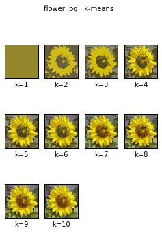
In [28]: runfile('C:/Users/xeroj/Downloads/V/Computer Vision/Lab4_Clustering__Classification/lab4_problem1.py', wdir='C:/Users/xeroj/Downloads/V/Computer Vision/Lab4_Clustering__Classification')
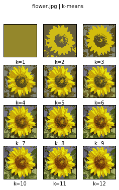
Took 0.195 s
In [29]: runfile('C:/Users/xeroj/Downloads/V/Computer Vision/Lab4_Clustering__Classification/lab4_problem1.py', wdir='C:/Users/xeroj/Downloads/V/Computer Vision/Lab4_Clustering__Classification')
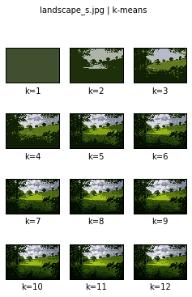
Took 0.300 s
In [30]: runfile('C:/Users/xeroj/Downloads/V/Computer Vision/Lab4_Clustering__Classification/lab4_problem2.py', wdir='C:/Users/xeroj/Downloads/V/Computer Vision/Lab4_Clustering__Classification')
-----========== Dataset Loading
Dataset: CIFAR10 , Feature: HOG Algorithm: KMEANS
Took 0.324 s to load CIFAR10
Dataset Shape: (10000L, 32L, 32L, 3L)
-----========== Dataset Splitting
Took 0.019 s to split
-----========== Computing Features: HOG
Took 0.199 s to compute features
-----========== Clustering Training: KMEANS
Performing KMEANS training for 100 images.
KMEANS took 0.024s for k = 10
-----========== KMEANS Training Accuracy Evaluation
Checking the accuracy of KMEANS using 100 images
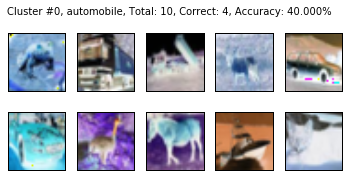
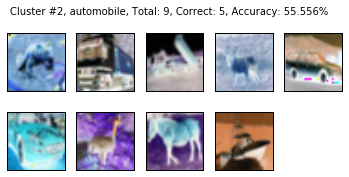
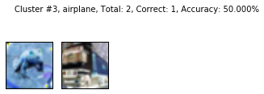
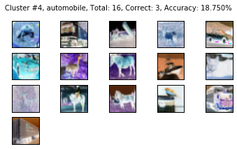
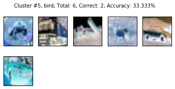
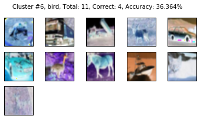
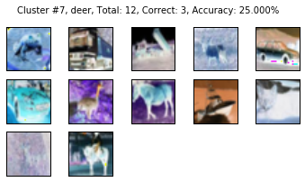

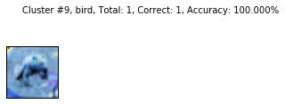
KMEANS Training Accuracy: 32.000 %
-----========== KMEANS Testing
Performing K-Means testing for 100 images.
KMEANS took 0.000s for k = 10
-----========== KMEANS Testing Accuracy Evaluation
Checking the accuracy of KMEANS using 100 images
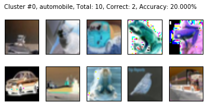
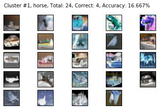
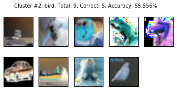
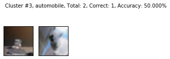
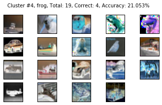
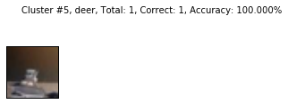
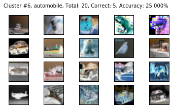
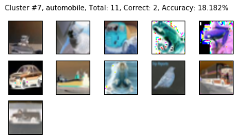
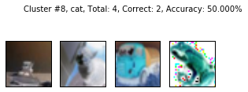
Cluster 9 is empty.
KMEANS Testing Accuracy: 26.000 %
In [31]: runfile('C:/Users/xeroj/Downloads/V/Computer Vision/Lab4_Clustering__Classification/lab4_problem2.py', wdir='C:/Users/xeroj/Downloads/V/Computer Vision/Lab4_Clustering__Classification')
Reloaded modules: lib_features, lib_mnist, lib_cifar
-----========== Dataset Loading
Dataset: CIFAR10 , Feature: HOG Algorithm: KMEANS
Took 0.327 s to load CIFAR10
Dataset Shape: (10000L, 32L, 32L, 3L)
-----========== Dataset Splitting
Took 0.020 s to split
-----========== Computing Features: HOG
Took 0.201 s to compute features
-----========== Clustering Training: KMEANS
Performing KMEANS training for 100 images.
KMEANS took 0.023s for k = 10
-----========== KMEANS Training Accuracy Evaluation
Checking the accuracy of KMEANS using 100 images
Cluster #0, bird, Total: 20, Correct: 5, Accuracy: 25.000%
Cluster #1, horse, Total: 8, Correct: 3, Accuracy: 37.500%
Cluster #2, horse, Total: 16, Correct: 4, Accuracy: 25.000%
Cluster #3, airplane, Total: 5, Correct: 1, Accuracy: 20.000%
Cluster #4, automobile, Total: 7, Correct: 4, Accuracy: 57.143%
Cluster #5, cat, Total: 17, Correct: 4, Accuracy: 23.529%
Cluster #6, cat, Total: 9, Correct: 3, Accuracy: 33.333%
Cluster #7, automobile, Total: 11, Correct: 5, Accuracy: 45.455%
Cluster #8, automobile, Total: 1, Correct: 1, Accuracy: 100.000%
Cluster #9, bird, Total: 6, Correct: 2, Accuracy: 33.333%
KMEANS Training Accuracy: 32.000 %
-----========== KMEANS Testing
Performing K-Means testing for 100 images.
KMEANS took 0.000s for k = 10
-----========== KMEANS Testing Accuracy Evaluation
Checking the accuracy of KMEANS using 100 images
Cluster #0, automobile, Total: 33, Correct: 6, Accuracy: 18.182%
Cluster #1, truck, Total: 6, Correct: 3, Accuracy: 50.000%
Cluster #2, cat, Total: 15, Correct: 3, Accuracy: 20.000%
Cluster #3, automobile, Total: 6, Correct: 2, Accuracy: 33.333%
Cluster #4, bird, Total: 10, Correct: 4, Accuracy: 40.000%
Cluster #5, automobile, Total: 16, Correct: 4, Accuracy: 25.000%
Cluster #6, cat, Total: 5, Correct: 2, Accuracy: 40.000%
Cluster #7, horse, Total: 7, Correct: 3, Accuracy: 42.857%
Cluster #8, bird, Total: 1, Correct: 1, Accuracy: 100.000%
Cluster #9, deer, Total: 1, Correct: 1, Accuracy: 100.000%
KMEANS Testing Accuracy: 29.000 %
In [32]: runfile('C:/Users/xeroj/Downloads/V/Computer Vision/Lab4_Clustering__Classification/lab4_problem2.py', wdir='C:/Users/xeroj/Downloads/V/Computer Vision/Lab4_Clustering__Classification')
Reloaded modules: lib_features, lib_mnist, lib_cifar
-----========== Dataset Loading
Dataset: CIFAR10 , Feature: HOG Algorithm: KMEANS
Took 0.331 s to load CIFAR10
Dataset Shape: (10000L, 32L, 32L, 3L)
-----========== Dataset Splitting
Took 0.020 s to split
-----========== Computing Features: HOG
Took 11.848 s to compute features
-----========== Clustering Training: KMEANS
Performing KMEANS training for 7500 images.
KMEANS took 1.077s for k = 10
-----========== KMEANS Training Accuracy Evaluation
Checking the accuracy of KMEANS using 7500 images
Cluster #0, frog, Total: 591, Correct: 155, Accuracy: 26.227%
Cluster #1, ship, Total: 544, Correct: 141, Accuracy: 25.919%
Cluster #2, truck, Total: 423, Correct: 157, Accuracy: 37.116%
Cluster #3, cat, Total: 1312, Correct: 257, Accuracy: 19.588%
Cluster #4, dog, Total: 631, Correct: 165, Accuracy: 26.149%
Cluster #5, truck, Total: 931, Correct: 211, Accuracy: 22.664%
Cluster #6, frog, Total: 473, Correct: 120, Accuracy: 25.370%
Cluster #7, ship, Total: 1036, Correct: 296, Accuracy: 28.571%
Cluster #8, automobile, Total: 461, Correct: 154, Accuracy: 33.406%
Cluster #9, bird, Total: 1098, Correct: 235, Accuracy: 21.403%
KMEANS Training Accuracy: 25.213 %
-----========== KMEANS Testing
Performing K-Means testing for 2500 images.
KMEANS took 0.001s for k = 10
-----========== KMEANS Testing Accuracy Evaluation
Checking the accuracy of KMEANS using 2500 images
Cluster #0, automobile, Total: 197, Correct: 28, Accuracy: 14.213%
Cluster #1, dog, Total: 190, Correct: 23, Accuracy: 12.105%
Cluster #2, bird, Total: 140, Correct: 22, Accuracy: 15.714%
Cluster #3, automobile, Total: 436, Correct: 48, Accuracy: 11.009%
Cluster #4, cat, Total: 209, Correct: 26, Accuracy: 12.440%
Cluster #5, deer, Total: 296, Correct: 38, Accuracy: 12.838%
Cluster #6, airplane, Total: 166, Correct: 23, Accuracy: 13.855%
Cluster #7, horse, Total: 369, Correct: 49, Accuracy: 13.279%
Cluster #8, airplane, Total: 156, Correct: 21, Accuracy: 13.462%
Cluster #9, ship, Total: 341, Correct: 41, Accuracy: 12.023%
KMEANS Testing Accuracy: 12.760 %
C:/Users/xeroj/Downloads/V/Computer Vision/Lab4_Clustering__Classification/lab4_problem2.py:58: VisibleDeprecationWarning: boolean index did not match indexed array along dimension 0; dimension is 7500 but corresponding boolean dimension is 2500
cluster = dataset_flat[k_means_labels == cluster_index]
C:/Users/xeroj/Downloads/V/Computer Vision/Lab4_Clustering__Classification/lab4_problem2.py:62: VisibleDeprecationWarning: boolean index did not match indexed array along dimension 0; dimension is 7500 but corresponding boolean dimension is 2500
labels = lbls[k_means_labels == cluster_index]
In [33]: lbls.shape
Traceback (most recent call last):
File "<ipython-input-33-9962c7850c89>", line 1, in <module>
lbls.shape
NameError: name 'lbls' is not defined
In [34]: testing.shape
Out[34]: (2500L, 32L, 32L, 3L)
In [35]: training.shape
Out[35]: (7500L, 32L, 32L, 3L)
In [36]: runfile('C:/Users/xeroj/Downloads/V/Computer Vision/Lab4_Clustering__Classification/lab4_problem2.py', wdir='C:/Users/xeroj/Downloads/V/Computer Vision/Lab4_Clustering__Classification')
Reloaded modules: lib_features, lib_mnist, lib_cifar
-----========== Dataset Loading
Dataset: CIFAR10 , Feature: PIXEL Algorithm: KMEANS
Took 0.321 s to load CIFAR10
Dataset Shape: (10000L, 32L, 32L, 3L)
-----========== Dataset Splitting
Took 0.024 s to split
-----========== Computing Features: PIXEL
Took 0.000 s to compute features
-----========== Clustering Training: KMEANS
Performing KMEANS training for 7500 images.
KMEANS took 58.750s for k = 10
-----========== KMEANS Training Accuracy Evaluation
Checking the accuracy of KMEANS using 7500 images
Cluster #0, ship, Total: 606, Correct: 216, Accuracy: 35.644%
Cluster #1, frog, Total: 690, Correct: 173, Accuracy: 25.072%
Cluster #2, airplane, Total: 421, Correct: 156, Accuracy: 37.055%
Cluster #3, automobile, Total: 819, Correct: 135, Accuracy: 16.484%
Cluster #4, frog, Total: 1000, Correct: 179, Accuracy: 17.900%
Cluster #5, airplane, Total: 658, Correct: 126, Accuracy: 19.149%
Cluster #6, deer, Total: 803, Correct: 157, Accuracy: 19.552%
Cluster #7, bird, Total: 1118, Correct: 182, Accuracy: 16.279%
Cluster #8, truck, Total: 854, Correct: 259, Accuracy: 30.328%
Cluster #9, truck, Total: 531, Correct: 107, Accuracy: 20.151%
KMEANS Training Accuracy: 22.533 %
-----========== KMEANS Testing
Performing K-Means testing for 2500 images.
KMEANS took 0.039s for k = 10
-----========== KMEANS Testing Accuracy Evaluation
Checking the accuracy of KMEANS using 2500 images
Cluster #0, cat, Total: 204, Correct: 29, Accuracy: 14.216%
Cluster #1, ship, Total: 220, Correct: 28, Accuracy: 12.727%
Cluster #2, airplane, Total: 157, Correct: 20, Accuracy: 12.739%
Cluster #3, horse, Total: 299, Correct: 36, Accuracy: 12.040%
Cluster #4, cat, Total: 305, Correct: 36, Accuracy: 11.803%
Cluster #5, deer, Total: 246, Correct: 29, Accuracy: 11.789%
Cluster #6, ship, Total: 235, Correct: 34, Accuracy: 14.468%
Cluster #7, deer, Total: 380, Correct: 50, Accuracy: 13.158%
Cluster #8, horse, Total: 271, Correct: 38, Accuracy: 14.022%
Cluster #9, frog, Total: 183, Correct: 27, Accuracy: 14.754%
KMEANS Testing Accuracy: 13.080 %
C:/Users/xeroj/Downloads/V/Computer Vision/Lab4_Clustering__Classification/lab4_problem2.py:58: VisibleDeprecationWarning: boolean index did not match indexed array along dimension 0; dimension is 7500 but corresponding boolean dimension is 2500
cluster = dataset_flat[k_means_labels == cluster_index]
C:/Users/xeroj/Downloads/V/Computer Vision/Lab4_Clustering__Classification/lab4_problem2.py:62: VisibleDeprecationWarning: boolean index did not match indexed array along dimension 0; dimension is 7500 but corresponding boolean dimension is 2500
labels = lbls[k_means_labels == cluster_index]
In [37]: runfile('C:/Users/xeroj/Downloads/V/Computer Vision/Lab4_Clustering__Classification/lab4_problem2.py', wdir='C:/Users/xeroj/Downloads/V/Computer Vision/Lab4_Clustering__Classification')
Reloaded modules: lib_features, lib_mnist, lib_cifar
-----========== Dataset Loading
Dataset: CIFAR10 , Feature: PIXEL Algorithm: KMEANS
Took 0.315 s to load CIFAR10
Dataset Shape: (10000L, 32L, 32L, 3L)
-----========== Dataset Splitting
Took 0.000 s to split
-----========== Computing Features: PIXEL
Took 0.020 s to compute features
-----========== Clustering Training: KMEANS
Performing KMEANS training for 7500 images.
KMEANS took 55.008s for k = 10
-----========== KMEANS Training Accuracy Evaluation
Checking the accuracy of KMEANS using 7500 images
Cluster #0, dog, Total: 718, Correct: 145, Accuracy: 20.195%
Cluster #1, bird, Total: 1100, Correct: 185, Accuracy: 16.818%
Cluster #2, airplane, Total: 439, Correct: 154, Accuracy: 35.080%
Cluster #3, truck, Total: 872, Correct: 264, Accuracy: 30.275%
Cluster #4, horse, Total: 574, Correct: 99, Accuracy: 17.247%
Cluster #5, frog, Total: 691, Correct: 175, Accuracy: 25.326%
Cluster #6, airplane, Total: 631, Correct: 144, Accuracy: 22.821%
Cluster #7, ship, Total: 650, Correct: 215, Accuracy: 33.077%
Cluster #8, dog, Total: 793, Correct: 136, Accuracy: 17.150%
Cluster #9, frog, Total: 1032, Correct: 180, Accuracy: 17.442%
KMEANS Training Accuracy: 22.627 %
-----========== KMEANS Testing
Performing K-Means testing for 2500 images.
KMEANS took 0.031s for k = 10
-----========== KMEANS Testing Accuracy Evaluation
Checking the accuracy of KMEANS using 2500 images
C:/Users/xeroj/Downloads/V/Computer Vision/Lab4_Clustering__Classification/lab4_problem2.py:58: VisibleDeprecationWarning: boolean index did not match indexed array along dimension 0; dimension is 2500 but corresponding boolean dimension is 7500
cluster = dataset_flat[k_means_labels == cluster_index]
Traceback (most recent call last):
File "<ipython-input-37-1a6fde592b92>", line 1, in <module>
runfile('C:/Users/xeroj/Downloads/V/Computer Vision/Lab4_Clustering__Classification/lab4_problem2.py', wdir='C:/Users/xeroj/Downloads/V/Computer Vision/Lab4_Clustering__Classification')
File "C:\Users\xeroj\Desktop\Local Programming\Anaconda2\lib\site-packages\spyder\utils\site\sitecustomize.py", line 866, in runfile
execfile(filename, namespace)
File "C:\Users\xeroj\Desktop\Local Programming\Anaconda2\lib\site-packages\spyder\utils\site\sitecustomize.py", line 87, in execfile
exec(compile(scripttext, filename, 'exec'), glob, loc)
File "C:/Users/xeroj/Downloads/V/Computer Vision/Lab4_Clustering__Classification/lab4_problem2.py", line 205, in <module>
testing_accuracy = evaluate_accuracy(k_means.cluster_centers_, k_means.labels_, testing, testing_flat, testing_lbls, dataset_label_names)
File "C:/Users/xeroj/Downloads/V/Computer Vision/Lab4_Clustering__Classification/lab4_problem2.py", line 58, in evaluate_accuracy
cluster = dataset_flat[k_means_labels == cluster_index]
IndexError: index 2502 is out of bounds for axis 0 with size 2500
In [38]: runfile('C:/Users/xeroj/Downloads/V/Computer Vision/Lab4_Clustering__Classification/lab4_problem2.py', wdir='C:/Users/xeroj/Downloads/V/Computer Vision/Lab4_Clustering__Classification')
Reloaded modules: lib_features, lib_mnist, lib_cifar
-----========== Dataset Loading
Dataset: CIFAR10 , Feature: PIXEL Algorithm: KMEANS
Took 0.325 s to load CIFAR10
Dataset Shape: (10000L, 32L, 32L, 3L)
-----========== Dataset Splitting
Took 0.000 s to split
-----========== Computing Features: PIXEL
Took 0.000 s to compute features
-----========== Clustering Training: KMEANS
Performing KMEANS training for 7500 images.
KMEANS took 65.865s for k = 10
-----========== KMEANS Training Accuracy Evaluation
Checking the accuracy of KMEANS using 7500 images
Cluster #0, frog, Total: 1024, Correct: 185, Accuracy: 18.066%
Cluster #1, airplane, Total: 648, Correct: 138, Accuracy: 21.296%
Cluster #2, truck, Total: 535, Correct: 121, Accuracy: 22.617%
Cluster #3, frog, Total: 722, Correct: 178, Accuracy: 24.654%
Cluster #4, bird, Total: 1123, Correct: 189, Accuracy: 16.830%
Cluster #5, automobile, Total: 815, Correct: 135, Accuracy: 16.564%
Cluster #6, truck, Total: 840, Correct: 249, Accuracy: 29.643%
Cluster #7, ship, Total: 610, Correct: 213, Accuracy: 34.918%
Cluster #8, airplane, Total: 429, Correct: 148, Accuracy: 34.499%
Cluster #9, deer, Total: 754, Correct: 152, Accuracy: 20.159%
KMEANS Training Accuracy: 22.773 %
-----========== KMEANS Testing
Performing K-Means testing for 2500 images.
KMEANS took 0.039s for k = 10
-----========== KMEANS Testing Accuracy Evaluation
Checking the accuracy of KMEANS using 2500 images
Cluster #0, airplane, Total: 308, Correct: 308, Accuracy: 100.000%
Cluster #1, automobile, Total: 237, Correct: 237, Accuracy: 100.000%
Cluster #2, bird, Total: 176, Correct: 176, Accuracy: 100.000%
Cluster #3, cat, Total: 224, Correct: 224, Accuracy: 100.000%
Cluster #4, deer, Total: 387, Correct: 387, Accuracy: 100.000%
Cluster #5, dog, Total: 304, Correct: 304, Accuracy: 100.000%
Cluster #6, frog, Total: 261, Correct: 261, Accuracy: 100.000%
Cluster #7, horse, Total: 207, Correct: 207, Accuracy: 100.000%
Cluster #8, ship, Total: 162, Correct: 162, Accuracy: 100.000%
Cluster #9, truck, Total: 234, Correct: 234, Accuracy: 100.000%
KMEANS Testing Accuracy: 100.000 %
In [39]: SHOW_CLUSTER_IMAGES = True
In [40]: